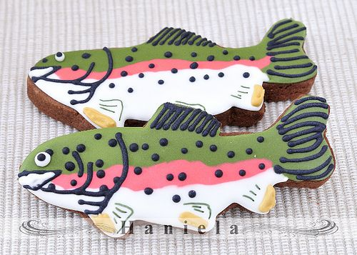
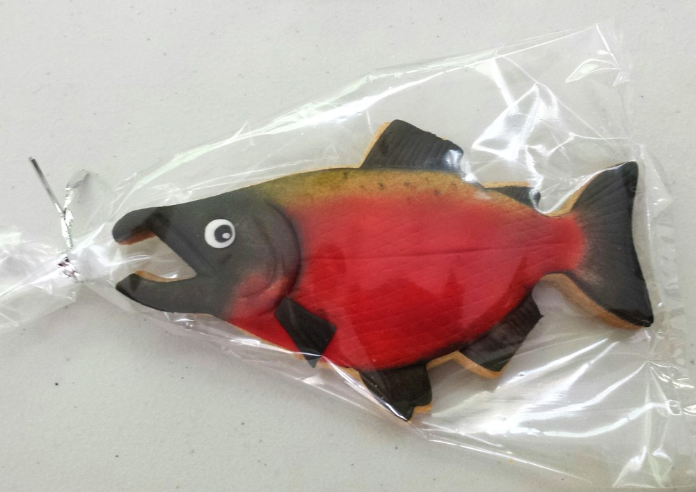
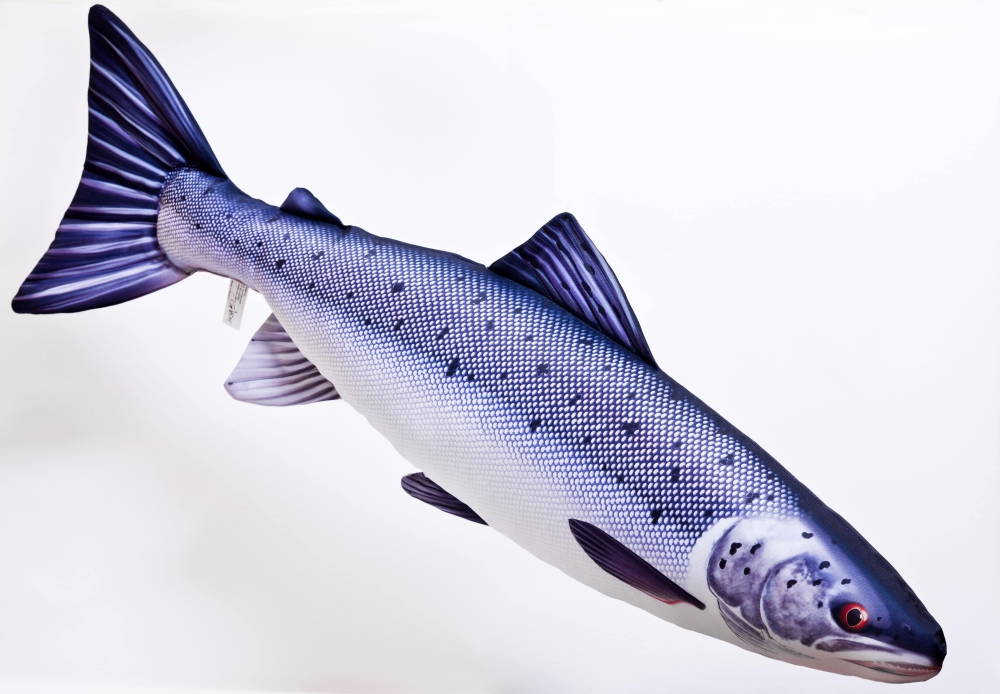

salmon cookies
If you think you don't like salmon, chances are high that you're overcooking it.
Overcooked salmon is super-firm and opaque orange all the way through and whether it's farm-raised or wild, it will be dry, chalky, and, frankly, a waste of your hard-earned cash.
so we made for you some cookies to make you try it and tell us about it and how it tastes.
we are making a lot of types of cookies like a fish just like this
  